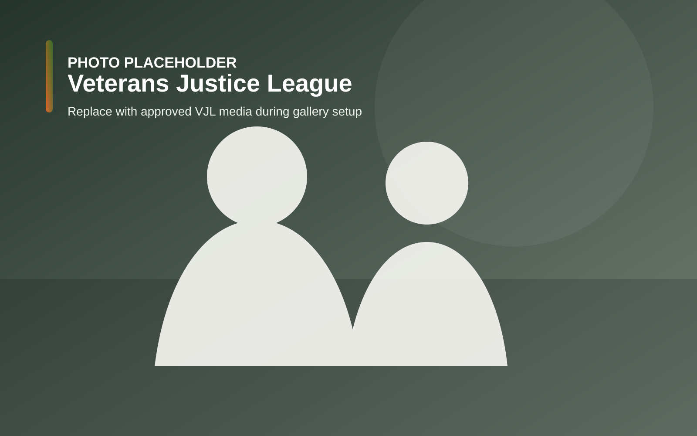

VJL Housing
Veteran-specific housing supporting transition from the criminal justice system through structure, peer support, physical training, and community service.
Learn more →Veterans Justice League
To provide support, housing, and advocacy for justice involved Veterans and allow them to use their unique stories to impact change among active-duty service members.

Three focused program areas supporting justice-involved Veterans and active-duty service members.
Veteran-specific housing supporting transition from the criminal justice system through structure, peer support, physical training, and community service.
Learn more →Peer-driven training connecting active-duty service members with justice-involved Veterans who share lived experience around high-risk choices and incarceration.
Learn more →Prison visits, Veteran resources, community education, and outreach intended to create earlier stability and support positive re-entry.
Learn more →VJL states that justice-involved Veterans have been mobilized to work with active-duty service members to create prevention within the military ranks.
VJL states it was the first in Colorado to open Veteran-specific housing for justice-involved Veterans transitioning out of the criminal justice system.
VJL states it is the first nonprofit dedicated specifically to justice-involved Veterans, active-duty service members, and their families.
Placeholder imagery for the development preview. Approved VJL media will replace these during gallery setup.
Help VJL continue its work supporting justice-involved Veterans and active-duty service members.